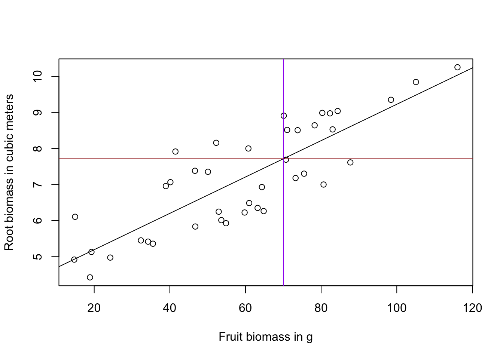
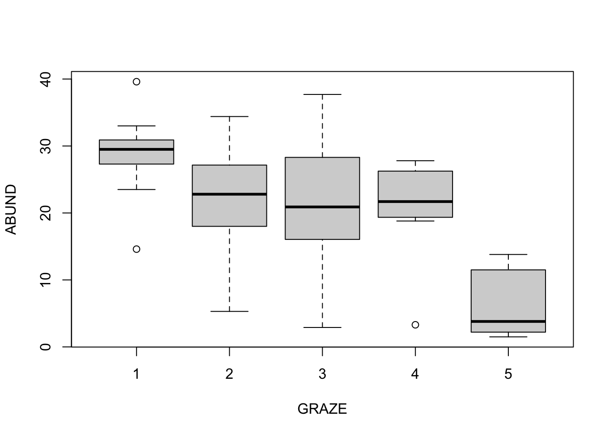
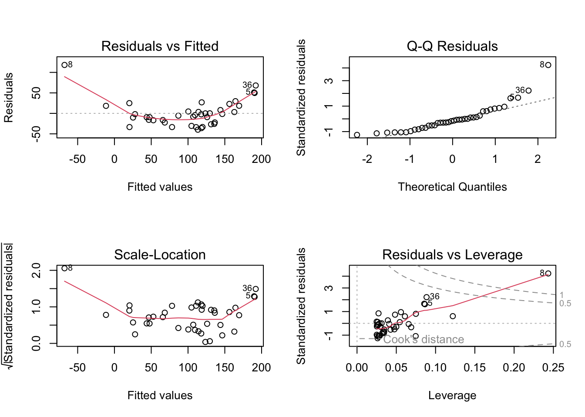
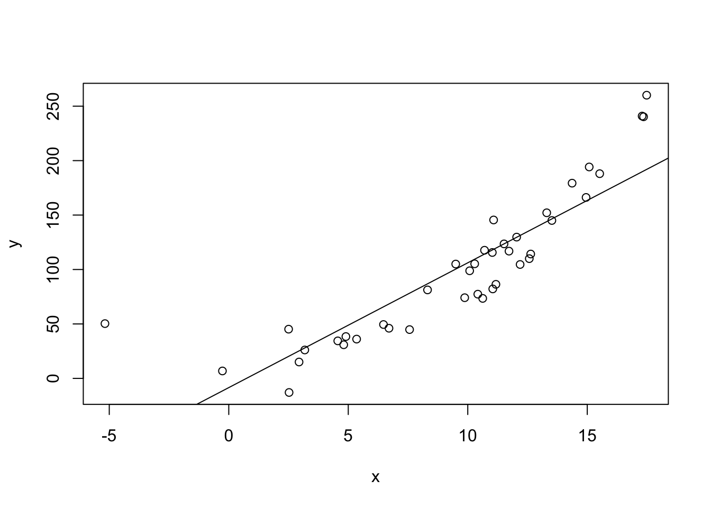
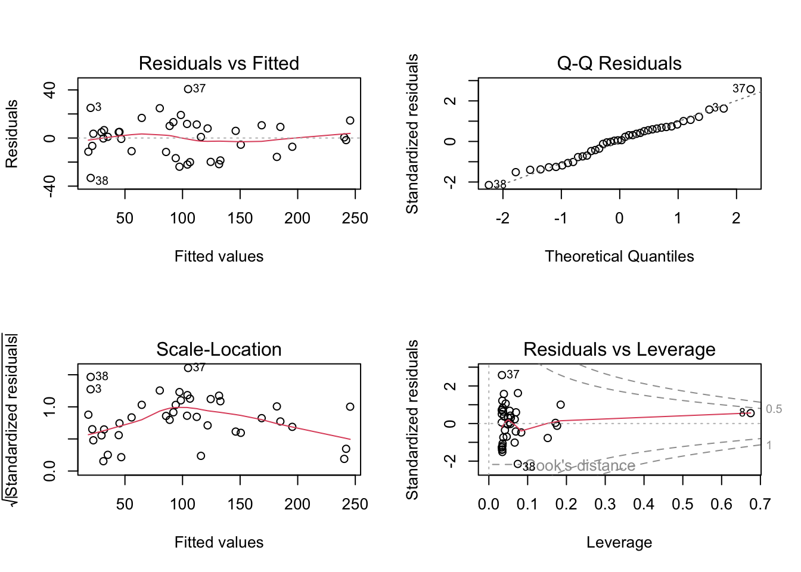
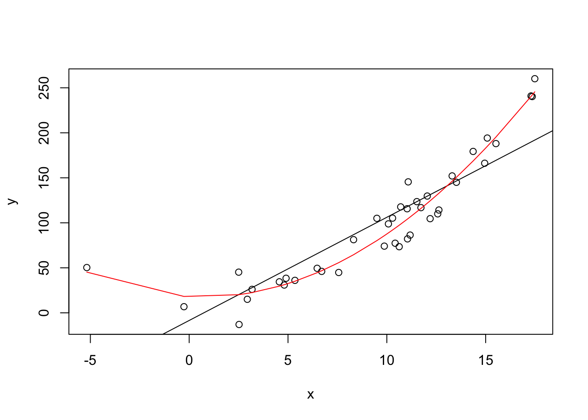

Imagine you have a garden with some fruit trees and you were thinking of adding some berry bushes between them. However, you don’t want them to suffer from malnutrition so you want to estimate the volume of root biomass as a function of the fruit biomass.
Carry out the following tasks
Perform a simple linear regression for the influence of fruit biomass on root biomass.
Visualize the data and add the regression line to the plot.
You will need the following functions:
lm()
summary()
plot()
abline()
Question
You have performed a simple linear regression for the influence of fruit biomass on root biomass.
Which of the following statements are correct? (More than one are correct)
### Solution
Root biomass is not significantly affected by fruit biomass. WRONG: Look at the p-value for the slope (2nd row in the regression table below Pr(>|t|))
Fruit biomass explains most of the variance (>50%) in the root biomass. CORRECT: The proportion of variance explained by the model is given by R2.
At a fruit biomass of 70, the model would predict root biomass of about \(4.18 + 0.05*70\). CORRECT: The linear equation for the model is: \(y = a*x + b\) that is \(Root = slope*Fruit + intercept\)
At a fruit biomass of 0, the model predicts a root biomass of about 4.18. CORRECT: This is the intercept (1st row in the regression table below Estimate)
This is the code that you need to interpret the results.
library(EcoData)# simple linear regressionfit <-lm(Root ~ Fruit, data = regrowth)# check summary for regression coefficient and p-valuesummary(fit)## ## Call:## lm(formula = Root ~ Fruit, data = regrowth)## ## Residuals:## Min 1Q Median 3Q Max ## -1.25105 -0.69970 -0.01755 0.66982 1.63933 ## ## Coefficients:## Estimate Std. Error t value Pr(>|t|) ## (Intercept) 4.184256 0.337987 12.380 6.6e-15 ***## Fruit 0.050444 0.005264 9.584 1.1e-11 ***## ---## Signif. codes: 0 '***' 0.001 '**' 0.01 '*' 0.05 '.' 0.1 ' ' 1## ## Residual standard error: 0.8111 on 38 degrees of freedom## Multiple R-squared: 0.7073, Adjusted R-squared: 0.6996 ## F-statistic: 91.84 on 1 and 38 DF, p-value: 1.099e-11# plot root explained by fruit biomassplot(Root ~ Fruit, data = regrowth, ylab ="Root biomass in cubic meters",xlab ="Fruit biomass in g")abline(fit) # add regression lineabline(v =70, col ="purple") # add line at x value (here fruit biomass of 70g)abline(h =4.184256+0.050444*70, col ="brown") # add line at y value according to x = 70 using the intercept and regression coefficient of x

Analyzing the “birdabundance” dataset
The dataset provides bird abundances in forest fragments with different characteristics in Australia. We want to look at the relationship of the variables “abundance”, “distance” and “grazing”.
Questions
First, answer the following questions?:
What is the most reasonable research question regarding these variables?
What is the response variable?
What is the predictor variable?
Then, perform the following tasks:
Fit a simple linear regression relating the response variable to the categorical predictor (that is the one with five levels, make sure that it is indeed a factor using as.factor())
Apply an ANOVA to your model.
You may need the following functions:
lm()
summary()
anova()
Use your results to chose the correct statement(s):
You have now fitted a simple linear regression with a categorical predictor and analyzed it. Which of the following statements are correct? (several statements are correct)
Solution
The maximum likelihood estimate of bird abundance for grazing intensity 1 is 28.623. CORRECT: When the predictor is a factor, the intercept equals the first factor level (by default, this follows an alphabetical order).
We can see in the regression table that the difference between grazing intensity 3 and 4 is significant. WRONG: Comparisons are always related to the intercept, i.e. to the first factor level. For comparisons among other factor levels we need post-hoc tests.
The non-significant p-value for grazing intensity 2 indicates that the data are compatible with the null hypothesis “H0: the bird abundance at grazing intensity 2 is on average 0.” WRONG: Comparisons are always related to the intercept, i.e. to the first factor level. Only the test for the intercept has H0: mean = 0.
A reasonable research question is how abundance is influenced by distance and/or grazing. Here, the response variable is abundance, while the predictors are distance and/or grazing.
This is the code that you need to interpret the results.
# change variable from integer to factorbirdabundance$GRAZE <-as.factor(birdabundance$GRAZE) fit <-lm(ABUND ~ GRAZE, data = birdabundance)summary(fit)## ## Call:## lm(formula = ABUND ~ GRAZE, data = birdabundance)## ## Residuals:## Min 1Q Median 3Q Max ## -18.3867 -4.1159 0.0269 5.1484 16.4133 ## ## Coefficients:## Estimate Std. Error t value Pr(>|t|) ## (Intercept) 28.623 2.086 13.723 < 2e-16 ***## GRAZE2 -6.673 3.379 -1.975 0.0537 . ## GRAZE3 -7.336 2.850 -2.574 0.0130 * ## GRAZE4 -8.052 3.526 -2.284 0.0266 * ## GRAZE5 -22.331 2.950 -7.571 6.85e-10 ***## ---## Signif. codes: 0 '***' 0.001 '**' 0.01 '*' 0.05 '.' 0.1 ' ' 1## ## Residual standard error: 7.52 on 51 degrees of freedom## Multiple R-squared: 0.5449, Adjusted R-squared: 0.5092 ## F-statistic: 15.27 on 4 and 51 DF, p-value: 2.846e-08# anova to check global effect of the factor grazing intensityanova(fit)## Analysis of Variance Table## ## Response: ABUND## Df Sum Sq Mean Sq F value Pr(>F) ## GRAZE 4 3453.7 863.42 15.267 2.846e-08 ***## Residuals 51 2884.2 56.55 ## ---## Signif. codes: 0 '***' 0.001 '**' 0.01 '*' 0.05 '.' 0.1 ' ' 1# boxplotplot(ABUND ~ GRAZE, data = birdabundance)

Model validation: Residual checks
Now, we will have a closer look at model diagnostics and residual checks in particular. Of course, we should have done this for all models above as well (we simply didn’t do this because of time restrictions). So remember that you always have to validate your model, if you want to be sure that your conclusions are correct.
For this exercise, you can prepare a dataset yourself called “dat” with the variables “x” and “y”. Simply copy the following code to generate the data:
Perform another simple linear regression with a modified formula, if needed.
Create a scatter plot of the data and add a regression line for the first fit in black and one for the second fit in red. The second model cannot be plotted with the abline() function. Use the following code instead:
lines(sort(x), predict(fit2, newdata =data.frame(x =sort(x))), col ="red")
You may also need the following functions:
lm()
summary()
par(mfrow = c(2, 2))
plot()
abline()
Use your results to answer the following questions:
What pattern do the residuals of the first regression model show when plotted against the fitted values?
What do you have to do to improve your first regression model?
Identify the correct statement(s) about the residuals of the modified model.
set.seed(234)x =rnorm(40, mean =10, sd =5)y =10-2*x +0.9* x^2+rnorm(40, mean=5, sd =20)dat <-data.frame(x, y)# simple linear regressionfit <-lm(y ~ x, dat)# check residualsop =par(mfrow=c(2,2))plot(fit) # residuals show a parabolic relationship (see first plot) -> to improve, fit a quadratic relationship

par(op)# scatter plotplot(y ~ x, data = dat)abline(fit)

summary(fit) # significantly positively correlated, but this doesn't tell the full story because the residuals are not okay## ## Call:## lm(formula = y ~ x, data = dat)## ## Residuals:## Min 1Q Median 3Q Max ## -39.884 -22.208 -4.948 10.602 118.164 ## ## Coefficients:## Estimate Std. Error t value Pr(>|t|) ## (Intercept) -8.459 10.973 -0.771 0.446 ## x 11.465 1.019 11.248 1.18e-13 ***## ---## Signif. codes: 0 '***' 0.001 '**' 0.01 '*' 0.05 '.' 0.1 ' ' 1## ## Residual standard error: 32.11 on 38 degrees of freedom## Multiple R-squared: 0.769, Adjusted R-squared: 0.763 ## F-statistic: 126.5 on 1 and 38 DF, p-value: 1.176e-13# improved regression modelfit2 =lm(y ~ x +I(x^2), dat)# check residualsop =par(mfrow=c(2,2))plot(fit2) # no pattern in residuals anymore (first plot) -> fit is fine

par(op)# scatter plotplot(y ~ x, data = dat)abline(fit)lines(sort(x), predict(fit2, newdata =data.frame(x =sort(x))), col ="red")

summary(fit2) # significantly negatively correlated, trustworthy now, because residuals are sufficiently uniformly distributed (first plot in plot(fit2))## ## Call:## lm(formula = y ~ x + I(x^2), data = dat)## ## Residuals:## Min 1Q Median 3Q Max ## -33.174 -11.444 0.938 10.164 40.666 ## ## Coefficients:## Estimate Std. Error t value Pr(>|t|) ## (Intercept) 17.87505 6.00812 2.975 0.00513 ** ## x -1.10100 1.27706 -0.862 0.39417 ## I(x^2) 0.80752 0.07526 10.730 6.49e-13 ***## ---## Signif. codes: 0 '***' 0.001 '**' 0.01 '*' 0.05 '.' 0.1 ' ' 1## ## Residual standard error: 16.05 on 37 degrees of freedom## Multiple R-squared: 0.9438, Adjusted R-squared: 0.9408 ## F-statistic: 310.9 on 2 and 37 DF, p-value: < 2.2e-16